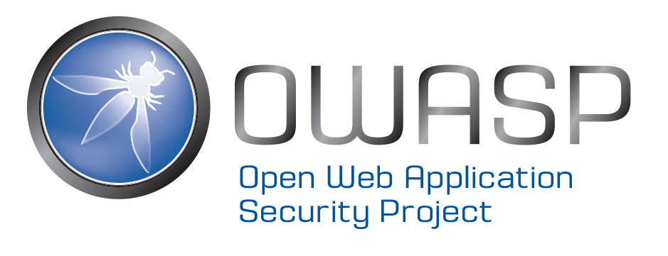

<section>


<p>
The Open Web Application Security Project (OWASP) is an open-source, not-for-profit application security organization made up of corporations, educational organizations, and individuals from around the world. Providing free, vendor-neutral, practical, cost-effective application security guidance, the OWASP Foundation is the de-facto standards body for web application security used by developers and organizations globally. <a href="https://owasp.org">Learn more</a> about OWASP and membership benefits.
</p>
</section>
